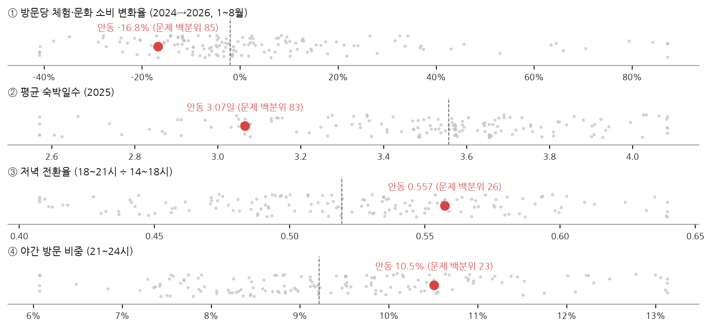

전국 시·군이 "방문은 오는데 소비·체류로 안 이어지는" 문제를 네 지표로 스스로 진단하는 표다. 우리 시·군 값 네 개를 넣으면 전국 144곳 가운데 위치와 문제 유형이 나온다. 정책 효과 점수가 아니라 추가 진단이 필요한 곳과 같은 문제를 가진 곳을 골라내는 탐색 지표다.
| 지표 | 정의 | 안동 | 시·군 중앙(144곳) | 문제 백분위 |
|---|---|---|---|---|
| 체험·문화 소비 변화율 | 외지인 방문당 체험·문화 소비(문화서비스+관광유원시설+기타레저)의 2024→2026 1~8월 변화율 | -16.8% | -2.0% | 85 |
| 평균 숙박일수 | 숙박 방문객의 평균 숙박일수(2025 월평균) | 3.07일 | 3.56일 | 83 |
| 저녁 전환율 | 18~21시 방문 ÷ 14~18시 방문(2026 1~8월) | 0.557 | 0.519 | 26 |
| 야간 방문 비중 | 21~24시 방문 ÷ 06~24시 방문(2026 1~8월) | 10.5% | 9.2% | 23 |
< 표 1 네 지표와 안동의 위치 (문제 백분위 0 = 가장 좋음, 100 = 가장 나쁨) >

< 그림 1 네 지표의 전국 분포(회색 점 = 시·군, 점선 = 중앙값)와 안동(빨강) >
=> 안동은 체험·문화 소비 변화(문제 백분위 85)와 숙박일수(83)에서 하위권이고, 저녁·야간 방문은 오히려 중앙보다 좋다. 사람이 저녁까지 남는데 체험·숙박 소비로 이어지지 않는 유형이다.
네 지표를 같은 가중치로 합친 진단 점수에서 안동은 144곳 중 57위지만, 가중치를 무작위로 1,000번 바꾸면 18~100위로 크게 흔들린다. 점수 하나로 순위를 매기면 가중치를 어떻게 정했느냐가 결론을 좌우한다. 그래서 하위 25%인 지표의 조합, 즉 문제 유형으로 읽는다. 안동의 유형("체험 · 숙박")을 가진 시·군은 7곳이다.
| 시·군 | 체험·문화 소비 변화율 | 평균 숙박일수 | 저녁 전환율 | 야간 방문 비중 | 진단 점수 |
|---|---|---|---|---|---|
| 영덕군 | -21.1% | 2.91일 | 0.493 | 10.5% | 67 |
| 양양군 | -24.6% | 2.56일 | 0.519 | 10.9% | 64 |
| 남해군 | -52.1% | 2.62일 | 0.563 | 12.2% | 56 |
| 울진군 | -53.9% | 3.06일 | 0.555 | 12.0% | 55 |
| 안동시 | -16.8% | 3.07일 | 0.557 | 10.5% | 54 |
| 광명시 | -20.4% | 3.19일 | 0.609 | 9.8% | 52 |
| 강릉시 | -14.8% | 2.87일 | 0.587 | 12.5% | 48 |
< 표 2 안동과 같은 유형(체험·문화 소비 하락 + 짧은 숙박)의 시·군 >
=> 이 7곳이 이어드림 방식(사람이 모이는 곳의 식음을 체험·저녁 소비로 잇기)을 먼저 적용해 볼 확산 후보다. 영덕·울진·강릉·양양(동해안)과 남해처럼 관광형 시·군이 많고, 광명은 도시형이라 성격이 달라 개별 확인이 필요하다.
| 순위 | 시·군 | 유형(하위 25% 지표) | 진단 점수 | 가중치를 흔든 순위(P10~P90) |
|---|---|---|---|---|
| 1 | 기장군 | 체험 · 숙박 · 저녁 · 야간 | 88 | 1~5위 |
| 2 | 진안군 | 체험 · 저녁 · 야간 | 87 | 1~6위 |
| 3 | 청도군 | 체험 · 저녁 · 야간 | 79 | 3~19위 |
| 4 | 합천군 | 저녁 · 야간 | 79 | 4~18위 |
| 5 | 화순군 | 체험 · 저녁 · 야간 | 77 | 5~24위 |
| 6 | 완주군 | 체험 · 저녁 · 야간 | 74 | 3~46위 |
| 7 | 인제군 | 체험 · 저녁 · 야간 | 74 | 4~34위 |
| 8 | 순창군 | 저녁 · 야간 | 74 | 7~38위 |
| 9 | 담양군 | 저녁 · 야간 | 73 | 2~57위 |
| 10 | 금산군 | 저녁 · 야간 | 72 | 13~32위 |
< 표 3 진단 점수 상위 10곳과 가중치 민감도 >
유형 분포: 해당 없음 51곳, 숙박만 25곳, 체험만 19곳, 저녁·야간 18곳, 체험·저녁·야간 9곳, 체험·숙박 7곳 등.